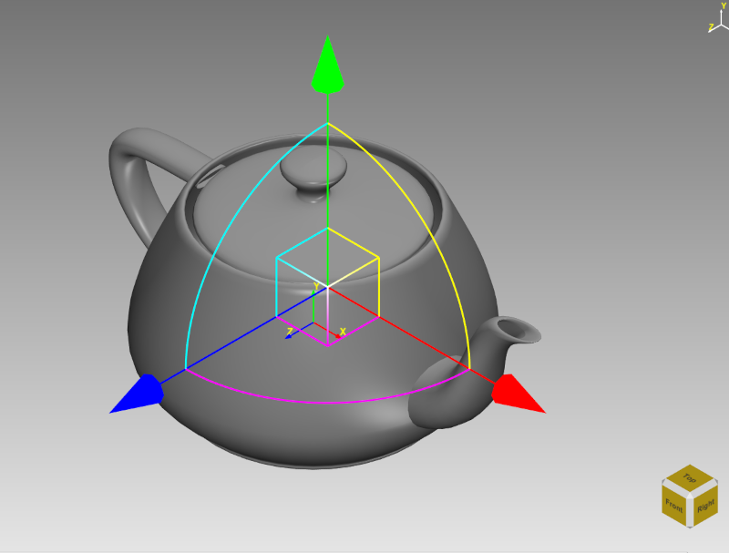
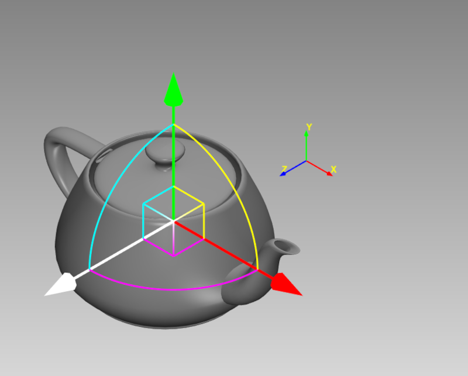
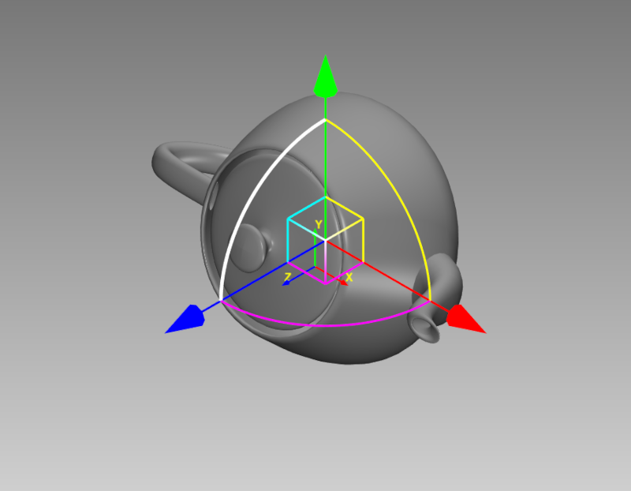

Lesson 17 of 18
Lesson 17: Node Transform Editing
Introduction
Lesson 8 covered entering exact translate/rotate/scale numbers in the Transformations panel. This lesson covers the interactive on-screen transform gizmo — a 3D handle you drag directly in the viewport to reposition, reorient, or resize selected objects visually, with immediate feedback.
Showing the Transform Gizmo
Step 1: Select an Object
Click an object in the viewport or Model Tree to select it.
Step 2: Enable the Gizmo
Show the transform gizmo for the current selection from the right-click context menu or the Transformations panel. The gizmo appears centered on the selection.

Transform gizmo with translate, rotate, and scale handles on a selected objectUsing the Gizmo Handles
Translate
Drag an axis arrow (X, Y, or Z) to move the object along that single axis.
Rotate
Drag one of the rotation rings — XY, YZ, or ZX — to rotate the object around the corresponding plane.
Scale
Drag the center scale handle to resize the object uniformly on all axes.

Dragging the gizmo's translate handle to move an object along an axis
Dragging one of the gizmo's rotation rings
The gizmo scales itself relative to the camera distance, so its handles stay a usable size whether you're zoomed in close or viewing the whole scene from far away.
Gizmo vs. Numeric Transformations
Both approaches edit the same underlying transform and can be used interchangeably:
- Gizmo: Fast, visual, best for rough positioning and quick adjustments while you can see the result.
- Numeric panel (Lesson 8): Precise, best for exact values or when reproducing an exact transform.
Node Transforms and Exploded View Manual Placement
The same transform gizmo is reused during exploded view manual placement (Lesson 15) to stage parts into a custom exploded pose. The key difference: during manual placement, gizmo edits update the staged exploded pose only, not the object's real transform, so the underlying model geometry is never altered.
Outside of exploded view manual placement, gizmo edits change the object's real transform immediately — just like the numeric Transformations panel.